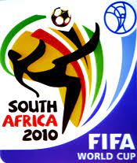

מונדיאל 2010
מארחת: דרום אפריקה
תקופת התחרות: 11 ביוני 2010 – 11 ביולי 2010 (4 שבועות ו־3 ימים)
 מספר משתתפות: 32
הזוכה: ספרד
מספר משחקים: 64
מלך השערים:
תומאס מולר
דויד וייה
וסלי סניידר
דייגו פורלאן
(5 שערים לכל אחד)
השחקן המצטיין: דייגו פורלאן
מונדיאל 2010 נערך בדרום אפריקה. המונדיאל החל ב-11 ביוני 2010 והסתיים ב-11 ביולי. מונדיאל זה הוא סיום של משחקי מוקדמות שהחלו באוגוסט 2007, שבהם שיחקו 204 נבחרות לאומיות מתוך 208 הנבחרות החברות בפיפ"א. כתוצאה מכך השתווה המונדיאל לאולימפיאדת בייג'ינג ב-2008 מבחינת מספר המדינות המשתתפות.
מונדיאל זה היה הראשון והיחיד עד כה שנערך ביבשת אפריקה, לאחר שדרום אפריקה גברה על מרוקו ועל מצרים בהתמודדות על אירוח הטורניר. החלטה זו של פיפ"א הותירה את קונפדרציית הכדורגל של אוקיאניה כקונפדרציית הכדורגל היחידה שלא אירחה את המונדיאל. איטליה הייתה האלופה המכהנת, לאחר שזכתה במונדיאל 2006 שנערך בגרמניה. הגרלת משחקי המונדיאל נערכה ב-4 בדצמבר 2009 בקייפטאון.
בחירת המדינה המארחת

אפריקה נבחרה כמארחת של המונדיאל כחלק מהמדיניות של פיפ"א לתת את זכות האירוח לקונפדרציות הכדורגל השונות, שאותה ביטלה באוקטובר 2007. חמש מדינות הגישו הצעות לאירוח המונדיאל: מצרים, לוב ותוניסיה (אירוח משותף), מרוקו ודרום אפריקה. תוניסיה משכה את הצעתה לאחר החלטתה של הוועדה המבצעת של פיפ"א לא לאפשר יותר אירוח משותף. הוועדה החליטה גם לא לדון בהצעתה של לוב, מאחר שהיא לא עמדה יותר ברשימת הקריטריונים שהותוו, ובין השאר כי הודיעה שלא תתיר לנבחרת ישראל להיכנס לשטחה אם זו תעפיל למונדיאל. דרום אפריקה, שכשלה בהתמודדות על אירוח מונדיאל 2006 בנסיבות שנויות במחלוקת, זכתה באירוח מונדיאל 2010 עם 14 קולות (מרוקו קיבלה 10 קולות ומצרים אפס קולות), ולפיכך העפילה נבחרת דרום אפריקה באופן אוטומטי לטורניר כמארחת.
על פי הנהוג במונדיאלים האחרונים, אירחה דרום אפריקה את גביע הקונפדרציות בשנת 2009, שבו נטלו חלק שש הנבחרות שזכו באליפות הקונפדרציה היבשתית שלהן, נבחרת דרום אפריקה המארחת ונבחרת איטליה שזכתה במונדיאל 2006 אך לא ביורו 2008. בטורניר זכתה נבחרת ברזיל, שגברה 3 - 2 על נבחרת ארצות הברית במשחק הגמר.
גמר המונדיאל
גמר מונדיאל 2010 התקיים בסוקר סיטי, יוהנסבורג, דרום אפריקה ב-11 ביולי 2010, ובו נקבע שאלופת העולם לשנת 2010 היא נבחרת ספרד, שניצחה את נבחרת הולנד, בתוצאה 0-1 בהארכה. הייתה זו הזכייה הראשונה בתולדות ספרד בגביע העולם.
שופט המשחק, הווארד וב האנגלי, שלף כמות גבוהה של כרטיסים לשחקני שתי הנבחרות, ושבר את שיא כמות הכרטיסים בגמר מונדיאל. בסך הכל שלף וב 14 כרטיסים צהובים, אחד מהם היה הכרטיס הצהוב השני לג'ון הייטינחה, שהורחק בכרטיס אדום בתוך ההארכה. שער הניצחון הספרדי נכבש על ידי השחקן המצטיין אנדרס אינייסטה, ארבע דקות לסיום ההארכה.
בפעם הראשונה בהיסטוריה נערך מפגש גמר מונדיאל ללא אחת מנבחרות ברזיל, איטליה, ארגנטינה וגרמניה. בפעם השישית בהיסטוריה, ולראשונה מאז גמר מונדיאל 1978 בו פגשה הולנד את ארגנטינה, נערך גמר מונדיאל בין שתי נבחרות שמעולם לא זכו בתואר. קדמו לו משחקי הגמר ב-1930, 1934, 1954 ו-1958. לראשונה מאז משחקי הגמר ב-1934 ו-1938, נרשמו שני משחקי גמר רצופים בין שתי נבחרות מיבשת אירופה. זכייתה הראשונה של ספרד הפכה אותה לנבחרת השמינית בהיסטוריה שזוכה בתואר, ובפעם הראשונה מאז צרפת במונדיאל 1998, זכתה בטורניר נבחרת שלא זכתה בו בעבר. כמו כן היא הייתה לנבחרת האירופית הראשונה בהיסטוריה שזוכה בתואר מחוץ ליבשת אירופה, והראשונה מאז ברזיל ב-1958 שזוכה בתואר הראשון שלה במונדיאל שלא נערך על אדמתה.
ספרד מעולם לא העפילה קודם לכן לגמר המונדיאל, ובטורניר זה היא הייתה לנבחרת ה-12 בהיסטוריה שמשתתפת במשחק גמר. הישג השיא הקודם שלה היה המקום הרביעי במונדיאל 1950. לנבחרת הולנד הייתה זו הופעה שלישית בגמר הטורניר, לאחר שרשמה שני הפסדים רצופים לגרמניה המערבית ב-1974 ולארגנטינה ב-1978. הפסדה השלישי של הולנד הפך אותה לנבחרת עם הכי הרבה הופעות בגמר שלא זכתה בתואר. היא עקפה את הונגריה (1938, 1954) וצ'כוסלובקיה (1934, 1962). גרמניה מובילה את טבלת ההפסדים בגמר, עם ארבעה.